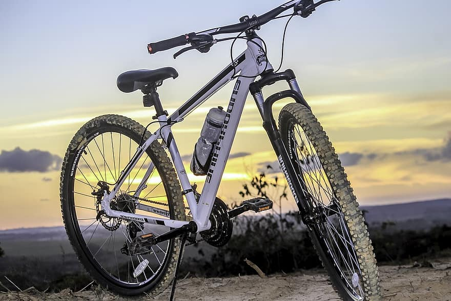

Hosted by Carl Gehring
Join the club. It's cool. Seriously though, it is. Learn to hit jumps, zoom over tech, pump rollers, and just send it. Usually meetings will be on early Sunday afternoons. It might say that they are on Friday after school, but there aren't really any mountain biking spots in the city. The places where meetings will happen are varied. Some of the spots include...
As they go, mountain bikes are typically bikes that look like this and have exorbitant price tags (An entry level bike is typically $400+).
If you have something that looks like that, great. If you don't have a bike, my family has a couple of spares (a small, maybe two mediums, and a large). Mountain bikes that you may have gotten at a department store or ordered from Amazon are not something you should ride on actual mountain bike trails. They are assembled poorly and may have problems from the factory.
If you want to contact us, use the club email: mtbclubatbls@gmail.com
My personal email: racecah@gmail.com
Or my phone number: (857) 719-6507 (If you decide to contact me by phone, please leave a text message, don't call.)